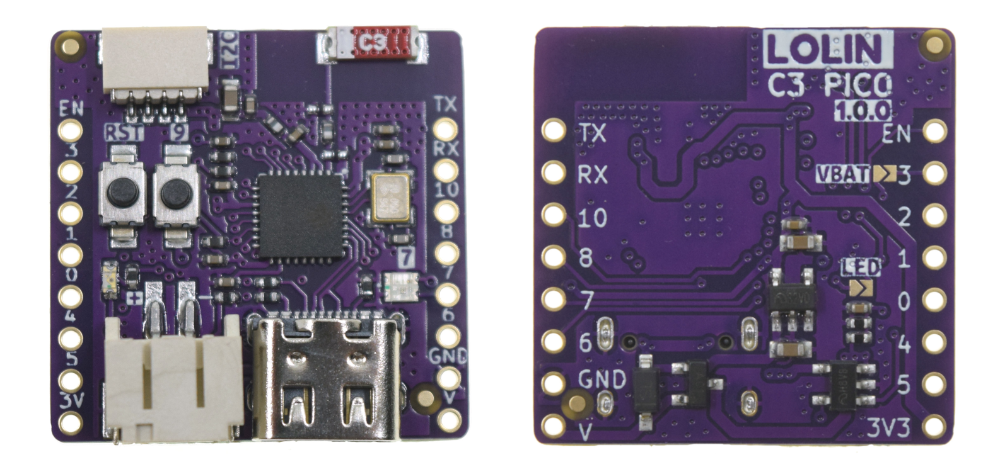
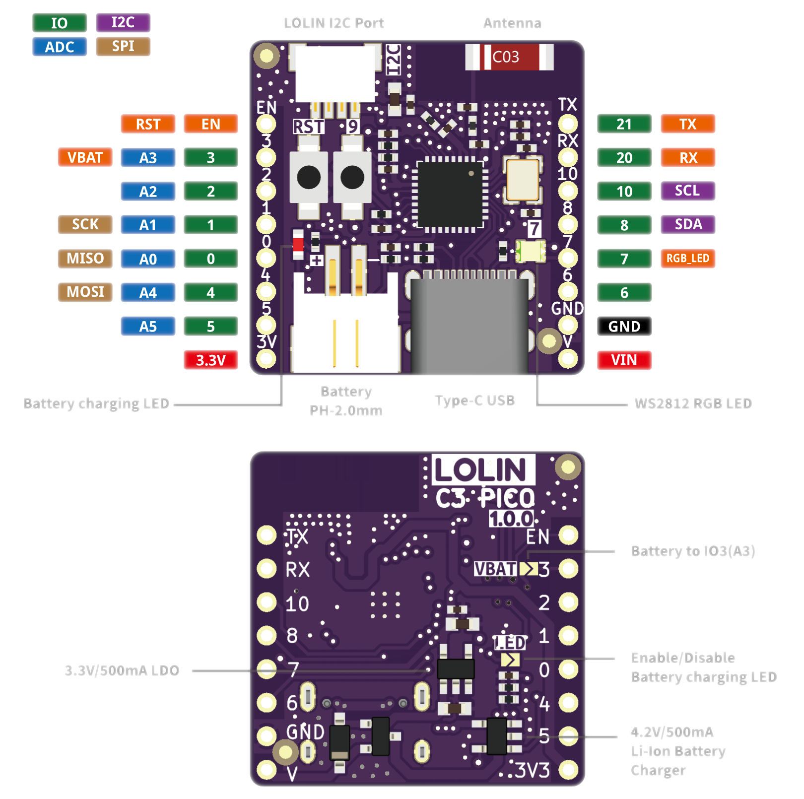
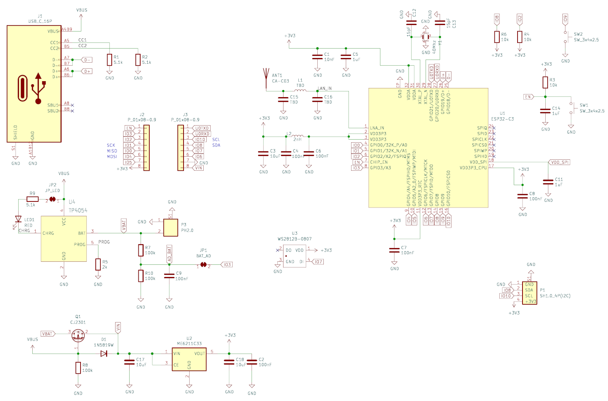
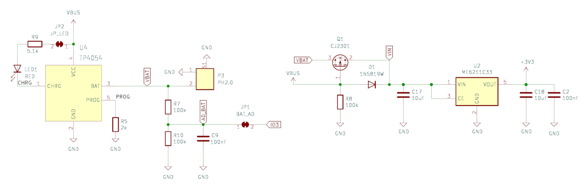
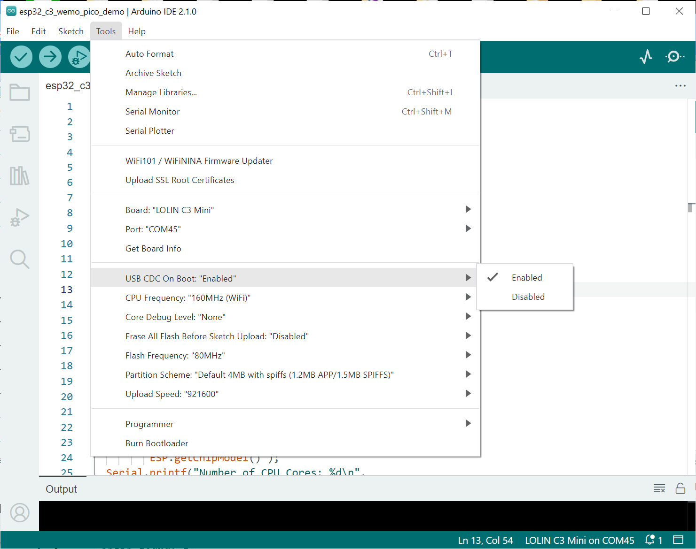
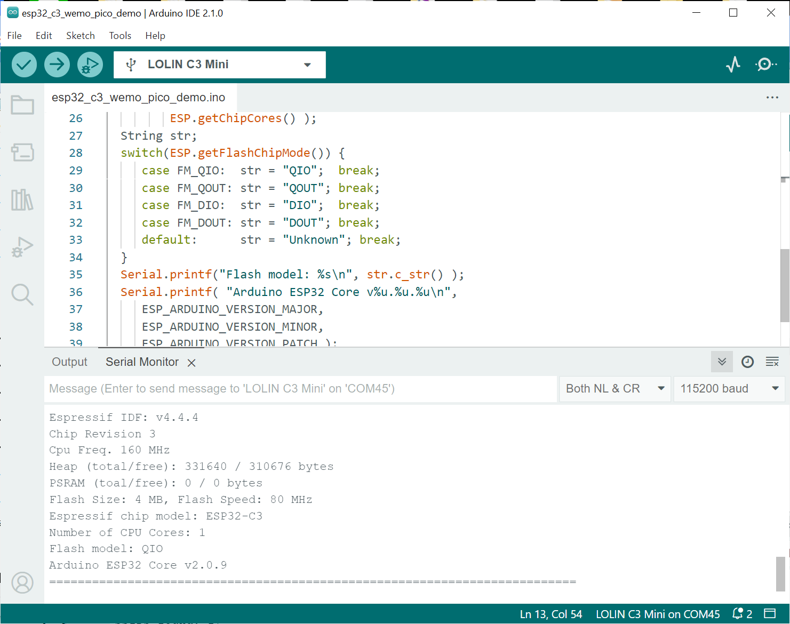

การเริ่มต้นใช้งานบอร์ด WeMos ESP32-C3 Pico#
▷ WeMos ESP32-C3 Pico#
บทความนี้กล่าวถึง การทดลองใช้งานบอร์ดไมโครคอนโทรลเลอร์ WeMos ESP32-C3 Pico ของบริษัท Wemos.cc ในเบื้องต้น

รูป: บอร์ด WeMos ESP32-C3 Pico v1.0.0 (มุมมองจากด้านหน้าและด้านหลัง)

รูป: แผนผังแสดงตำแหน่งขา (PinOut) ของบอร์ด WeMos ESP32-C3 Pico
ข้อมูลเกี่ยวกับบอร์ด
- ชิปตัวประมวลผล: Espressif ESP32-C3FH4 SoC
- Single-Core RISC-V CPU, 160MHz
- IEEE 802.11 b/g/n 2.4GHz WiFi / BLE 5.0
- มีหน่วยความจำแบบแฟลชรวมไว้ในชิปเดียวกัน: Embedded SPI Flash (4MB)
- เชื่อมต่อด้วยคอนเนกเตอร์ Type-C USB
- ใช้ตัวสร้างความถี่ Crystal Oscillator 40MHz
- ไม่มีชิป USB-to-Serial Bridge ดังนั้นต้องใช้งานแบบ USB-CDC สำหรับการรับส่งข้อมูลกับคอมพิวเตอร์ของผู้ใช้
- ใช้ไอซีควบคุมแรงดันคงที่: MC6211C33 LDO Voltage Regulator (3.3V)
- ใช้สายอากาศแบบ Ceramic Chip Antenna (SMD)
- มีปุ่มกด BOOT (10k pullup, GPIO-9)
- มีปุ่มกด RESET (10k pullup, CHIP_EN)
- มีไอซีสำหรับชาร์จแบตเตอรี: On-board Battery Charging IC (TP4054)
- 500mA Charging Current (max.)
- Red LED (Charging Status)
- 12x I/O Pins
- 6x ADC Input Pins (A0 .. A5)
- 1x WS2812 RGB LED (GPIO-7, 3.3V)
- 1x LOLIN I2C Port (4-pin)
- 1x Battery Connector (PH2.0 Connector)
- ใช้งานได้ร่วมกับโมดูล WeMos LOLIN D1-mini shields
- ถ้ามีการบัดกรีด้วยขา Pin Headers ก็สามารถเสียบขาลงบนเบรดบอร์ดได้ (Breadboard-Friendly)

รูป: ผังวงจรของบอร์ด Wemos C3 Pico (Schematic)
ขา VIN ซึ่งเป็นแรงดันไฟเลี้ยงและนำไปต่อกับไอซี 3.3V LDO Regulator จะได้ไฟเลี้ยงจากสองแหล่งจ่าย
- VBUS (5V) จากพอร์ต USB Type-C หรือ
- VBAT ซึ่งเป็นแรงดันไฟเลี้ยงจากแบตเตอรี่ (ถ้ามีการต่อใช้งาน 3.7V LiPo)
ถ้าเชื่อมต่อกับแบตเตอรี่ LiPo และไม่เสียบสาย USB Type-C วงจรบนบอร์ดจะได้รับแรงดันไฟเลี้ยงจาก VBAT

รูป: บางส่วนของผังวงจรที่แสดงให้เห็นวงจรสำหรับแหล่งจ่ายไฟเลี้ยงบนบอร์ด
ถ้าบัดกรีเชื่อมต่อที่ตำแหน่ง Solder Jumper JP1 ก็จะใช้ขา GPIO3 เป็นขาแอนะล็อกอินพุต ซึ่งต่อผ่านวงจรแบ่งแรงดัน (ใช้ตัวต้านทาน 100k จำนวน 2 ตัว ต่ออนุกรมกัน) ได้ค่าเท่ากับ VBAT/2 และสามารถใช้ ADC ภายในชิป เพื่อวัดระดับแรงดันแบตเตอรี่ได้
ข้อสังเกต: บอร์ด ESP32-C3 ของ Wemos.cc อีกบอร์ดหนึ่งคือ WeMos C3 Mini (v2.1.0) แต่มีขนาดใหญ่กว่า WeMos C3 Pico ใช้สายอากาศแบบ PCB Antenna และไม่มีวงจรชาร์จแบตเตอรี่
บทความที่เกี่ยวข้อง: "การเริ่มต้นใช้งานบอร์ด WeMos LOLIN C3 Mini"
▷ Arduino Sketch Demo#
ถัดไปเป็นตัวอย่างโค้ด Arduino Sketch สำหรับทดลองใช้งานกับ Arduino IDE
โดยจะต้องมีการติดตั้ง Arduino Core for ESP32 ไว้แล้ว
(เพิ่มรายการสำหรับไฟล์ package_esp32_index.json ใน Arduino Board Manager
แล้วติดตั้งแพคเกจสำหรับ ESP32)
URL: https://raw.githubusercontent.com/espressif/arduino-esp32/gh-pages/package_esp32_index.json
void setup() {
Serial.begin(115200);
while(!Serial);
delay(1000);
Serial.println("\nWemos ESP32 C3 Mini / Pico Demo...\n");
}
#define SEP_LINE "====================================="
void loop() {
Serial.println( SEP_LINE SEP_LINE );
Serial.printf("Espressif IDF: %s\n", ESP.getSdkVersion() );
Serial.printf("Chip Revision %lu\n", ESP.getChipRevision() );
Serial.printf("Cpu Freq. %lu MHz\n", ESP.getCpuFreqMHz() );
Serial.printf("Heap (total/free): %lu / %lu bytes\n",
ESP.getHeapSize(), ESP.getFreeHeap());
Serial.printf("PSRAM (toal/free): %lu / %lu bytes\n",
ESP.getPsramSize(), ESP.getFreePsram());
Serial.printf("Flash Size: %lu MB, Flash Speed: %lu MHz\n",
ESP.getFlashChipSize()/(1024*1024UL),
ESP.getFlashChipSpeed()/(uint32_t) 1e6 );
// more info...
Serial.printf("Espressif chip model: %s\n",
ESP.getChipModel() );
Serial.printf("Number of CPU Cores: %d\n",
ESP.getChipCores() );
String str;
switch(ESP.getFlashChipMode()) {
case FM_QIO: str = "QIO"; break;
case FM_QOUT: str = "QOUT"; break;
case FM_DIO: str = "DIO"; break;
case FM_DOUT: str = "DOUT"; break;
default: str = "Unknown"; break;
}
Serial.printf("Flash model: %s\n", str.c_str() );
Serial.printf( "Arduino ESP32 Core v%u.%u.%u\n",
ESP_ARDUINO_VERSION_MAJOR,
ESP_ARDUINO_VERSION_MINOR,
ESP_ARDUINO_VERSION_PATCH );
Serial.println( SEP_LINE SEP_LINE );
delay(4000);
}

รูป: ตัวอย่างการตั้งค่าเพื่อเลือกบอร์ดใช้งานสำหรับ Arduino IDE

รูป: ตัวอย่างข้อความเอาต์พุต
▷ กล่าวสรุป#
บทความนี้ได้นำเสนอการใช้งานบอร์ด Wemos C3 Pico และมีตัวอย่างโค้ดสำหรับการเขียนโปรแกรมด้วย Arduino IDE สำหรับการทดลองในเบื้องต้น
This work is licensed under a Creative Commons Attribution-ShareAlike 4.0 International License.
Created: 2023-09-17 | Last Updated: 2023-09-17